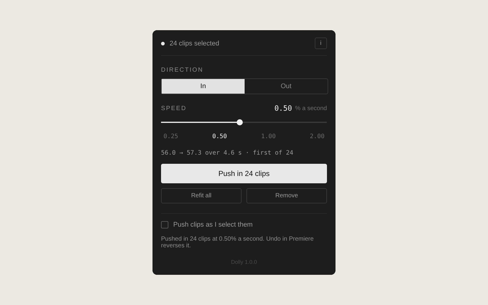

05 — Premiere Pro plugin
Dolly
Slow push-ins for Premiere Pro, on every clip at once.

What it does
A subtle push-in means two Scale keyframes on every clip, set by hand hundreds of times a film. Presets help, but they reset a cropped clip’s Scale, and their keyframes drift off the clip as soon as you trim or slip it.
Dolly is a docked panel. Pick a speed, select your clips and click once. Every clip zooms from its own starting Scale at the same pace, with keyframes on its first and last frames. After an edit, Refit all puts every zoom back on its clip’s ends, keeping each clip’s speed.
Install
(04)- 01DownloadGet the .ccx file using the button above.
- 02InstallQuit Premiere, then double-click the file. Creative Cloud asks you to confirm. It warns you to only install plugins from sources you trust.
- 03OpenIn Premiere, choose Window → UXP Plugins → Dolly, then dock the panel wherever suits you.
- 04UpdateWhen a new version is out, a notice appears in the panel. Download it and double-click the new file to replace the old one.